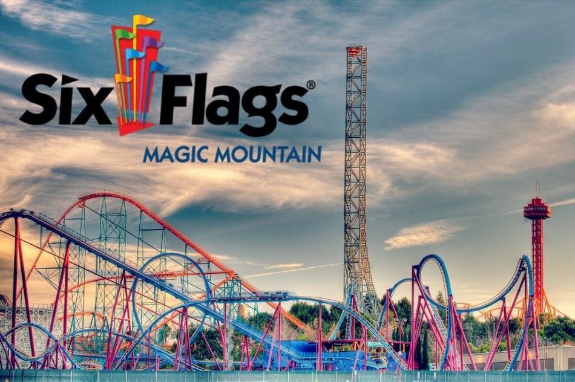

My Portfolio
This is Steven's portfolio.
My LinkedIn ProfileMy GitHub Profile
Hello world, my name is Steven Fein. I am a second year CS Major at California State University, Northridge. I enjoy building things and learning new technologies. Happy coding!

I have always enjoyed technology from a young age, especially videogames and computers. My first exposure to CS was an elective I took in high school and I learned the very basics about creating instructions for a computer. I really enjoy being able to build things and modify everything down to the slightest detail.
Some of my projects
- A webapp called FridgePal that generates food recipes. This was my final project while I was a student for Google CSSI 2019. Visit FridgePal!
- An app that simulates playing the lottery for my AP Computer Science Principles exam in high school. Built using the AppLab environment from Code.org. Visit Lotto Simulator!
Photogallery
This is a photo from one my favorite hiking trails near my house. It overlooks the San Fernando Valley.
This is my favorite theme park, Six Flags Magic Mountain. It contains many world record setting rollercoasters and is one of my favorite places to hang out with friends.
My newest interest is astrophotography. I am just beginning, but there is a lot of photographing potential especially when the sky is clear. This photo is not mine, I am still waiting for the right weather conditions to be able to take the right shot, but this is what I imagine I will see (hopefully).
Hidden Talents
- I have 4 years of experience playing Mellophone in a Marching Band.
- I learned how to solve a rubik's cube in 7th grade.
- My favorite dish to cook is baked potatoes.
Click here to see content created by server code.
Click here to get a random message: